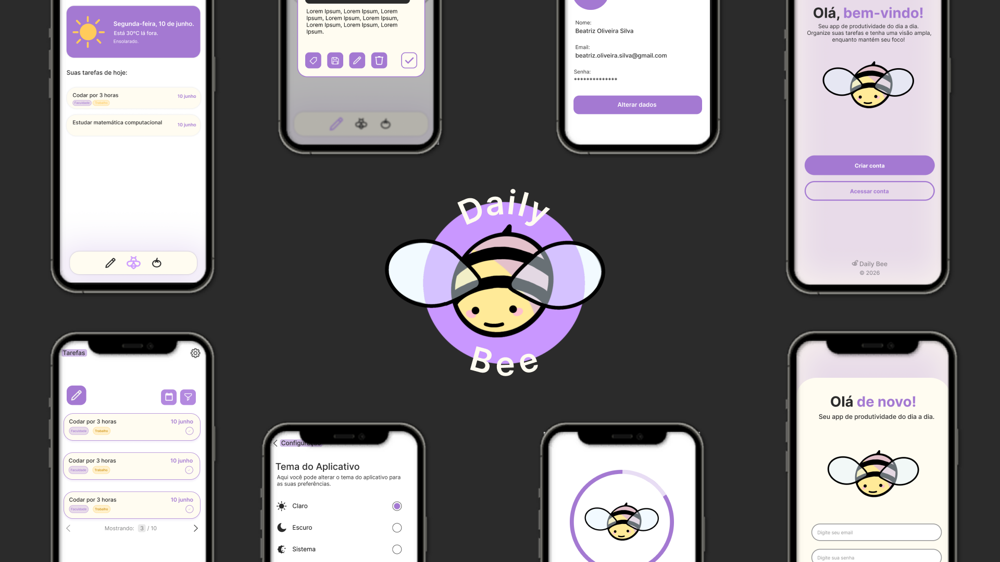

Olá. Eu sou a Beatriz Oliveira ─ desenvolvedora full stack, atualmente cursando Desenvolvimento de Software Multiplataforma, com foco em interfaces, integrações, APIs e inteligência artificial.
Busco sempre criar soluções escaláveis, responsivas e acessíveis combinando lógica, criatividade e design.
FATEC Jacareí - cursando
ETEC São José dos Campos - concluído
- Condução de cerimônias Scrum, com organização e documentação de artefatos e projetos.
- Colaboração em equipe multidisciplinar, com foco em comunicação eficiente e entregas de qualidade.
- Desenvolvimento full stack, atuando no front end, backend, design de interfaces e identididade visual e documentação técnica.
- Desenvolvimento de landing pages em WordPress, com foco em performance, responsividade e interatividade utilizando JavaScript e CSS.
- Prototipação de interfaces no Figma, transformando necessidades de negócio em soluções visuais intuitivas e funcionais.
Curso voltado para fundamentos de hardware, software, manutenção de computadores e noções básicas de redes e suporte técnico.
Certificação de inglês avaliando compreensão auditiva e leitura para situações do dia a dia e ambiente profissional.
Sistema web com a missão de facilitar o aprendizado de metodologias ágeis. Oferece atividades para testar e validar seu conhecimento.
- - Atuei como Scrum Master e desenvolvi integrações entre frontend e APIs REST em JavaScript.
- - Refatorei o backend para melhorar legibilidade, manutenção e escalabilidade do código.

Daily BeeAplicativo de produtividade que une gerenciamento de tarefas e a técnica pomodoro. Ele te ajuda a organizar o seu dia e manter o foco no que realmente importa.
- - Defini os requisitos e as regras de negócio dividindo-os em três sprints
- - Desenvolvi o frontend focando em responsavidade e um bom UX e UI
Site que ensinsa na prática as principais tendências tecnológicas, desenvolve habilidades inovadoras e conquista resultados reais para sua carreira.
- - Prototipei soluções no Figma com interfaces intuitivas e funcionais.
- - Colaborei com o fundador aplicando comunicação assertiva e entendendo o impacto técnico do projeto.
Entre em contato
Gostou do meu trabalho?
Estou disponível para oportunidades, freelances e networking.
Entre em contato comigo!